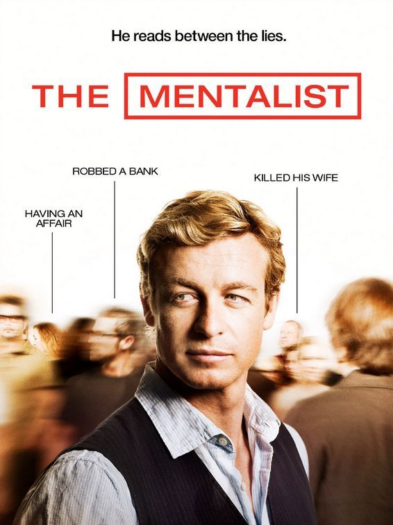
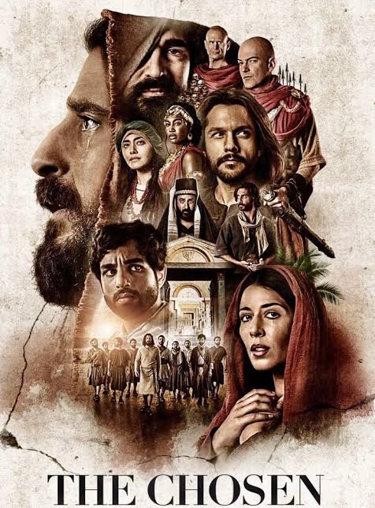

A escrivã Verônica Torres testemunha um suicídio na delegacia e começa a investigar abusadores sexuais por conta própria [Netflix].
Ela descobre uma rede criminosa liderada por um serial killer militar, o que a força a forjar a própria morte.
Sob nova identidade, ela caça um líder religioso que comanda uma máfia secreta de abuso e tráfico humano.
No desfecho, Verônica enfrenta um criador de cavalos milionário e desmantela toda a cúpula da corrupção.
Ana e Mariana descobrem que suas filhas recém-nascidas foram trocadas na maternidade por erro médico [Netflix](https://www.netflix.com/br/title/81002483). Elas decidem morar sob o mesmo teto para criar as duas crianças juntas em uma grande família. A convivência gera conflitos profissionais e amorosos, além de problemas de guarda com os pais das meninas. No desfecho, elas fingem um namoro para vencer a justiça e acabam descobrindo um amor real entre si.
Três alunos da classe trabalhadora ganham bolsas de estudo para o colégio mais exclusivo da Espanha. O choque de realidade e os segredos sombrios entre os jovens ricos e os novatos geram muita tensão. A rivalidade extrema e os mistérios culminam em assassinatos que abalam a escola a cada ano.Ao longo das temporadas, a investigação dos crimes expõe uma teia profunda de luxúria, drogas e corrupção.

O ex-falso médium Patrick Jane se torna consultor da polícia após sua esposa e filha serem assassinadas.Ele usa um poder extremo de observação e manipulação psicológica para desmascarar criminosos em investigações cotidianas. Seu foco principal é encontrar Red John, o serial killer brilhante que deixou uma marca de sangue em sua vida.Após anos de uma caçada implacável, Jane finalmente se vinga e reconstrói seu futuro ao lado da agente Teresa Lisbon.

Um carismático carpinteiro da Galileia inicia um ministério revolucionário que atrai seguidores de origens totalmente distintas. O grupo enfrenta a opressão das autoridades romanas e a severa perseguição dos líderes religiosos locais.Conforme milagres e ensinamentos se espalham, Jesus caminha em direção ao seu destino final em Jerusalém. A trama detalha as dinâmicas humanas, os sacrifícios e os momentos decisivos que transformaram a história da humanidade